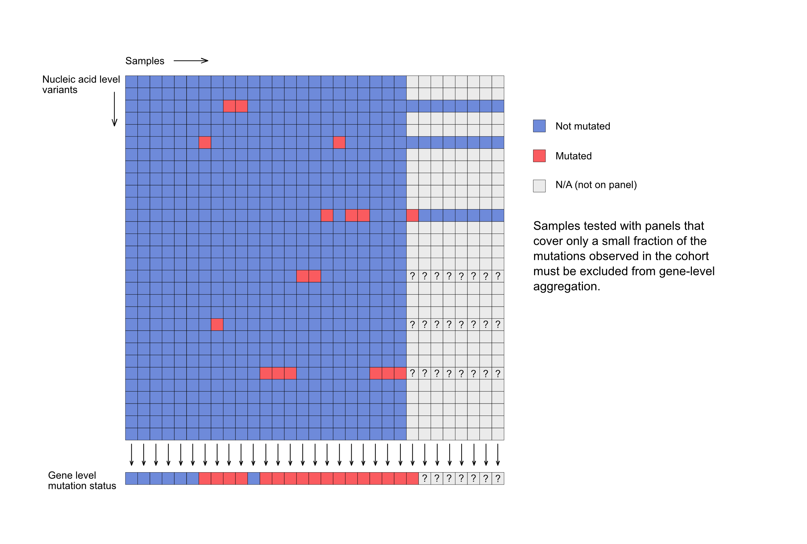
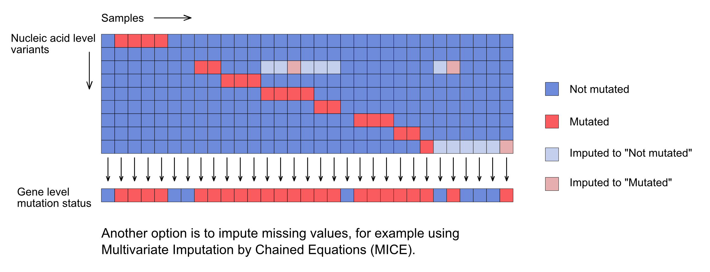
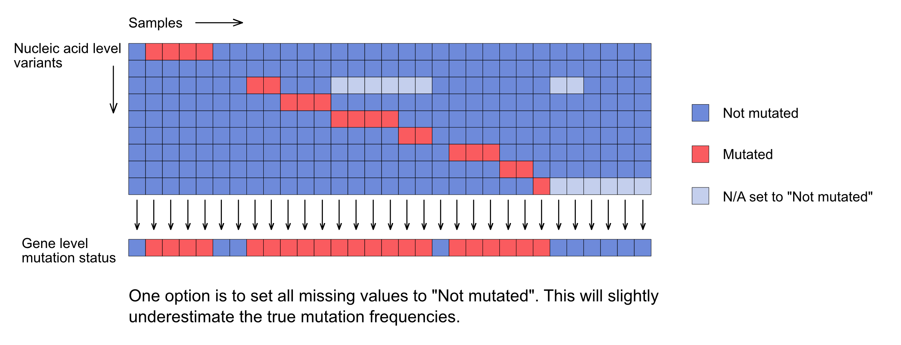

Analysis Details
Integrating mutations
Issue: panels have different coverage
When multiple mutations need to be integrated, for example to derive a gene-level mutation status, it becomes difficult if there are functionally relevant mutations that are not measured by all the panels used for the patients in a cohort of interest.
For example, some hotspot panels test only for selected mutations in target genes:

Solution
To solve this issue, samples that are tested with panels not measuring the majority of mutations will be excluded:
- Identify all mutations found in a cohort of interest.
- Identify panels that do not test a predefinied minimum percentage of these
mutations (
panel_coverage_threshold, default is 80%). - Remove all samples tested with these panels of insufficient coverage.
However, even high-density assays do not have identical coverage of genes or genomic regions:

That is, there may still be functionally relevant mutations that are only measured by a subset of high-density panels. For all samples measured by other panels, the gene-level mutation status would be uncertain.
Even worse, there may not be a single panel that measures all variants found in a patient cohort.
To test whether this is really an issue, I examined the mutation-versus-panel matrix and determined for each mutation how many panels measure that variant. This was only done for variants that affect the amino acid sequence, as intergenic or intronic variants may not be reported by all panels.
For example, there are 32218 amino acid modifying variants that are only measured by two panels. I had a closer look into one of these variants, which was only measured by DFCI-ONCOPANEL-3 and DFCI-ONCOPANEL-3.1. There are 22,771 patients with samples profiled with these panels. Excluding all 149,234 patients profiled with other panels would not be useful. And assuming that the variant is wild type for all other 149,234 patients would also not be correct.
Exact approach

Retain only patients profiled with panels that test for all mutations found in
any of the patients in the cohort (set panel_coverage_threshold to 100%). The
disadvantage is that the number of patients can be quite be small, resulting in
large confidence intervals for the calculated mutation frequencies.
Approximative approach 1 - imputation of missing values

Impute the mutation status of variants that were not tested by a panel using MICE (Multiple Imputation by Chained Equations):
- MUT is encoded as 1, WT as 0.
- The imputation will result in a fractional number between 0 and 1 for each missing value.
- Random numbers (uniformly distributed between 0 and 1) are used to assign “MUT” or “WT” to missing values depending on the value of the random variable and on the imputed value from MICE. The originally missing value gets a “MUT” if the random number is larger than the imputed value from MICE, and “WT” otherwise.
Approximative approach 2 - set missing values to wild type

Here the assumption is that the most frequent mutations will be measured by all high-density panels. The remaining variants will then have lower allele frequencies, and the number of patients where this mutation is present but not detected is small. Setting the missing values to wild type will only slightly underestimate the true allele frequency.
Comparison of the two approximate approaches
Although imputation has the potential to provide more accurate mutation
frequencies, it is computationally very expensive, leading to long run times. In
many cases, the differences to the frequencies obtained when setting missing
values to wild type (after applying the panel_coverage_threshold) are small
and within the confidence interval. Therefore, for many applications it may be
appropriate to use the faster approach of setting missing values to wild type.
Determining co-occurrence of mutations
It does not make sense to first identify all mutations in a cohort and then search for co-mutations, as this is very time-consuming and probably also requires too much memory space.
There are different levels of co-occurrence. It could be co-occurrence at gene level, for example, co-occurrence of KRAS and BRAF mutations. Or, it can be and individual amino acid or even nucleotide variant level. For example, which genes have a functionally relevant mutation in samples with a KRAS G12C mutation.
Therefore, here is an approach that should be feasible:
- Define a small number of genes of interest (in many cases, just one gene).
- Define indications of interest.
- Get all annotated unique mutations from entire GENIE for these gene(s) of interest.
- Filter these mutations according to the question (for example, keep only particular variants, or only variants with known or likely functional impact).
- Identify of all samples from the indications of interest that carry at least one of the filtered mutations of the gene(s) of interest, i.e. determine the mutation status at gene level of all samples from the indications of interest based on the filtered mutations.
- Find all mutations of any other genes in samples that are mutated at gene level for the gene(s) of interest.
- Filter these mutations of other genes based on the annotation of unique mutations, e.g. by keeping only protein-altering mutations. It would be helpful to base this filter on the type of gene (oncogene, tumor suppressor gene, other gene), but this should be the subject of a separate package to be developed.
- Determine the gene level mutation status for all samples of the indications of interest and for all genes left after filtering in the previous step.
- We now have the gene level mutation status for the gene(s) of interest and for all other genes that are co-mutated with the gene(s) of interest in at least one sample. This final result table is created by concatenating the gene level mutation table for the gene(s) of interest and the gene level mutation table for the co-mutated genes. Follow-up analyses depend very much on the type of question, for example, are some of these co-mutated genes more or less frequently mutated in the group of samples with a mutation in the gene(s) of interest (Fisher's Exact Test would be appropriate here). Or simply what is the frequency of mutations of the co-mutated genes in the group of samples with a mutation in the gene(s) of interest.